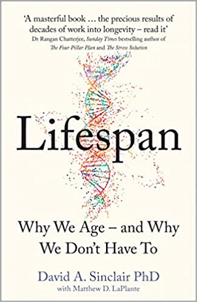
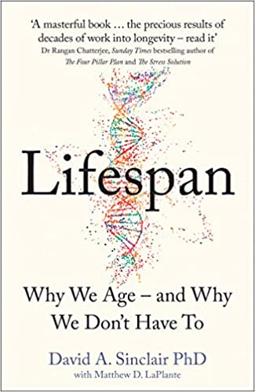

Books list

 



Kafka on the shore
Murakami escreve bem, não sou especialista em romances mas a forma como ele leva a narrativa realmente é cativante e te prende. Esse é o segundo livro que leio desse autor, e fica claro uma tendência na relação do autor com arte em geral. É muito interessante ver como a erudição do autor é projetada nós personagens quando eles discutem alguma peça musical ou literária. A questão do surrealismo é outro ponto a se notar, os fenômenos surreais acontecem com uma naturalidade que impressiona.
Man's search for meaning
Valioso na parte em que descreve a psicologia das pessoas no campo de concentração e a força que a mente tem em situações difíceis.
How to take smart notes
Livro muito bom sobre como nosso cérebro funciona. Não se deixe enganar pelo titulo, as ideias apresentadas vão muito além de um simples tutorial prático. Fiquei impressionado com o nível de abstração que o autor apresentou a mecânica de anotação e processo criativo de escrever.
Range
Esse é aquele livro que o autor tem uma tese e tenta te convencer que a tese tem relevância ou é valida por meio de exemplos de anedotas. Não aprecio muito esse tipo de livro, é estilo best seller com formula do Gladwell. Esse foi o primeiro livro que escutei por completo usando Google books. O autor fala que ser generalista pode trazer benefícios no longo prazo. Eu acredito nessa tese, pois nosso processo criativo parte da capacidade em estabelecer conexões entre diferentes ideia. Chega um ponto que você cansa dos inúmeros exemplos que autor usa pra tentar te convencer. Francamente, acho que a argumentação é fraca. Mas reconheço que o autor quer apresentar uma visão contrária ao senso comum atual de focar em especialização.
Good economics for hard times
Livro começa explicando mitos sobre imigração. As pessoas evitam incertezas, quando não saber a distribuição, as fomasas unknown unknown. Teoria de vantagem comparativa pra especialização da produção. Livro comenta das cotas. Livro apresenta visão sensata sobre efeito de políticas de corte de imposto e crescimento econômico. Corte de imposto nos ricos causa crescimento? Não há evidências paea confirmar. Educação causa educação? Ou o contrário? Taleb falou isso também. Existe uma receita para crescimento do país? Não. Como a China cresceu tanto? Foi porque os recursos era muito mal utilizados. Em quem confiar o crescimento, governo ou mercado? Ambos tem problemas, e ambos tem histórias de sucesso. Trickle down economics não funcionou e não funcionará. Inteligência artificial vai substituir planejadores financeiros. Winner takes all e network effect, também discutimos óleo Taleb. Privatização não é a solução para melhor gerenciamento de recursos. Só trabalhar duro vai fazer você ter mobilidade social? Nao é o que as evidências mostram. Negative income tax em vez de programar de transferência de renda. Discute os mitos do ubi.
Anything you want
Livro para se inspirar. Hell yeah! or no. Boa heuristics para decidir qual caminho tomar. Sobre a necessidade ser a mãe de todo aprendizado combina com a ideia de que único jeito de aprender é com skin in the game. Delegar de mais pode ser ruim.
The new lombard street
Definitivamente um livro que não dá pra só escutar, cada frase vem com um jargão técnico que precisa ser desbravado. Cada palavra tem um conceito abstrato que expande o significado.
Livro não é de entretenimento, contém muitas informações relevantes e com certeza irei voltar a referiar ele para explicar algo.
Repo market faz com que o sistema descentralizado funcione como um grande banco. Instituições financeiras conseguem financiar ativos com empréstimos, ou seja, aumenta ativo e passivo.
Quando encargos financeiros são devidos, essas instituições podem utilizar do repo market para conseguir liquidez usando o próprio ativo como colateral. E assim a vida segue, até o dia que o mercado de crédito não aceita mais esse colateral e as instituições não conseguem cumprir suas obrigações.
Por que a crise de 2008 foi causada pela falta de colateral no mercado monetário e consequentemente a taxa da libor subiu muito. Historicamente, todos os as instituições financeiras utilizam de alguma forma o mercado de crédito para se financiar. Se for uma instituição financeira cadastrada no banco Central ela usa o sistema de financiamento do banco Central caso contrário usa o mercado de compromissadas ou o mercado do Euro dólar internacional. Durante a crise os títulos de hipoteca foram considerados ruins fez com que eles não fossem mais aceitos no mercado de compromissadas fazendo com que muitos instituições não conseguisse em fundos de liquidez no mercado de crédito nacional buscaram financiamento no mercado do eurodólar. Isso fez a taxa da libor subir.
Vez do Fred usar a discount window, ele empresta pros primary dealer aumentar as reservar e expandindo a sua balance sheet. Com isso o Fed atua para que a taxa inter banking seja próxima do target.
Repo veio a Ted do federal Funds market, bancos transacionavam para aproximar a um grande banco.
Dois players centrais: bancos e security dealers. Is bancos usam o money market para financiar a elasticidade de pagamentos. E os security dealer usam o money market para financiar market liquidity.
Security dealers ganham em um 2 way market de securities. E usam o repo market como fonte de financiamento.
Conexão entre funding liquidity e market liquidity é feita pelo dealer. O dealer se financia no money market e faz mercado no capital market, comprando e vendendo.
Market liquidity, shiftability, e a predisposição dos dealers fazerem o two way market.
Trasury bill tem maturação de curto prazo, Bond de longo prazo.
O que acontece quando o preço das bonds cai? Os dealers que se financiaram ficam sem liquidez, pois se o valor dos financiamento por compromissadas depende do valor dos títulos. Os dealers passam a depender de financiamento caro do sistema bancário.
Diferença entre um dealer e um trader. O dealer gera liquidez pro mercado.
Shadow banking.
Schumpeter. Crédito permite a criatividade destrutiva. Fonte do dinamismo capitalista. pois permite o novo ofertar para conseguir recursos do velho. Crescimento então gera instabilidade.
Minsky. Survival constraint. Cash inflows must encounter cash outflow.
Bc relaxa ou restringe survival constraint dos bancos com omo. Criando disciplina. Omo alteram o short term interest rate que os bancos transacional reservas entre si. preço que eles pagam para postergar uns dias o pagamento final.
Bancos podem usar outras fontes para equilibrar o fluxo de caixa. Fontes privada.
Instabilidade inerente do crédito.
Problemas de liquidez vira problema de solvência quando devedores precisam liquidar ativos para cobrir obrigações de saída de caixa presente.
Write down. Ou perda por redução ao valor recuperável é o análogo para estoques. Redução ao valor realizável líquido. Reduz valor dos ativos e diminui linha de crédito no money market, criando problema de liquidez. Foi o aconteceu na crise de 2008 com hipoteca.
Expansão no crédito e aumento no preço dos ativos está correlacionado com problemas de liquidez e de solvência. Aumento no preço está ligado ao aumento do gasto de devedores por meio do crédito que representa renda do outro lado da transação. Aumento no preço implica em reavaliação nos estoques o que permite expansão ainda maior do crédito.
London. Rate of interest era usado com preço para o banco aceitar novos desconto ( Gold outflow) e inflow (prazo de maturação de Bill of exchange internacional). Receber por empréstimos internacionais.
No padrão ouro. Banco pode criar depósitos para demanda interna. Não pode criar ouro para demanda externa.
Primary dealer oferta por treasury qualquer momento que o governo quer empréstimo.
Currency swap.
Lifespan
O livro da uma perspectiva sobre os avanços na tecnologia anti envelhecimento. Ele explora as implicações de uma vida mais longa em diversos aspectos: econômico, político, social, ambiental.
O que eu tiro do livro? Os avanços tecnológicos irão nos permitir uma vida mais longa.
Pragmatic capitalism
Lições
-
Você não vai ser Warren buffet, o argumento foi fraco mas concordo
-
Taxas importam, no mercado americano principalmente por causa dos etf baratos
-
Não existe investimento passivo
-
Sunken cost falacy é perigoso… Mas acho que existe um motivo
Muita boa explicação do sistema bancário moderno.
The psychology of influence
-
Priming, contrast effect, o segundo valor vai ser influenciado pelo primeiro
-
Reciprocidade, você vai estar influenciado a retribuir um favor
-
Concistencia, uma vez que aceitamos algo estamos influenciado a aceitar o resto… Compliance tática.
-
Foot in the door technique, fazer com que a pessoa aceite um requerimento pequeno para em seguida aceitar um pedido maior.
-
Perguntar como está para a pessoa faz com que elas sejam menos sting depois.
-
Prova social, mostra como depoimentos são poderoso pois influenciam outras pessoas.
Compliance, aceitação, fechar negócio
-
Boa aparência, Halo effect carrega pre julgamentos inconscientes
-
Similaridade, roupa, ideias, background, religião, hábitos (mirror and match)
-
Holy day card "I like you" funciona. Somos afficionados por elogios.
Valsa brasileira
2003-2011
Milagre brasileiro favorecido pelo cenário externo. Internamente com políticas distributiva e investimento em infraestrutura básica.
Diminuicao das desigualdades foi combinação de bolsa família e a própria dinâmica de consumo numa economia crescente.
Contabilidade criativa. Não contabilizar investimento do PAC no cálculo fiscal.
Divida pública brasileira apresenta composição de curto prazo e parcela grande pós fixada, que eleva o risco e demonstra fragilidade perante necessidades de financiamento e alterações na taxa de juros da economia.
Questão do caso atípico e particular brasileiro de alto juros e inflação na crise de 2014.
Fischer Black
Capm funciona mesmo sem o ativo livre de risco.
Liquidity is about price.
Crise 2007 teve novos instrumentos de transferência de risco que causaram distorção na precificação.
Stewart Myers corporate finance.
Black conectou finance view com o economics view quando coloca o preço do risco junto com juros. Capm extende o conceito do preço relativo do dinheiro numa análise intertemporal.
Capm mostra algo no presente, ele não tenta prever o futuro.
Há um equilíbrio instantâneo. Mas o sistema evolui a todo instante fora de equilíbrio.
Capm não funciona para prever. Ele permite ter insights sobre como o mundo funciona. Ele fala de equilíbrio em um ponto no tempo e não como esse equilíbrio evolui.
Laws of human nature
Criar um self que possa nos suportar. Selfestem from within. Não negar nossa auto absorção. Embrace the full picture of themselves.
Não terminei…
The debt myth
Mmt. nao li tudo pois vi bons contra argumentos.